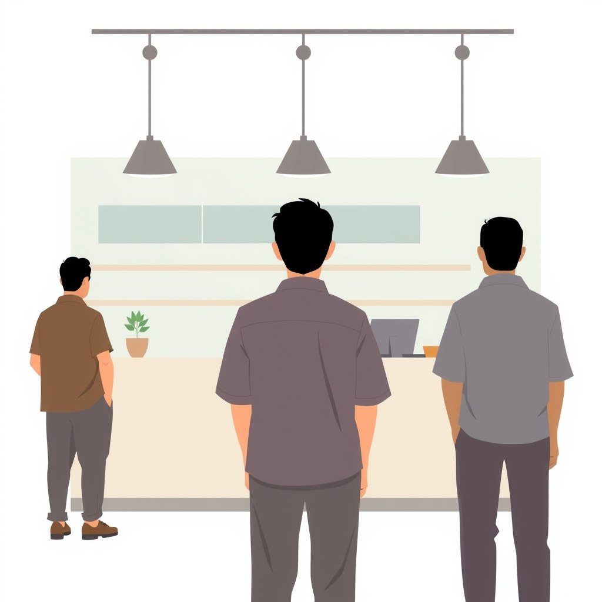
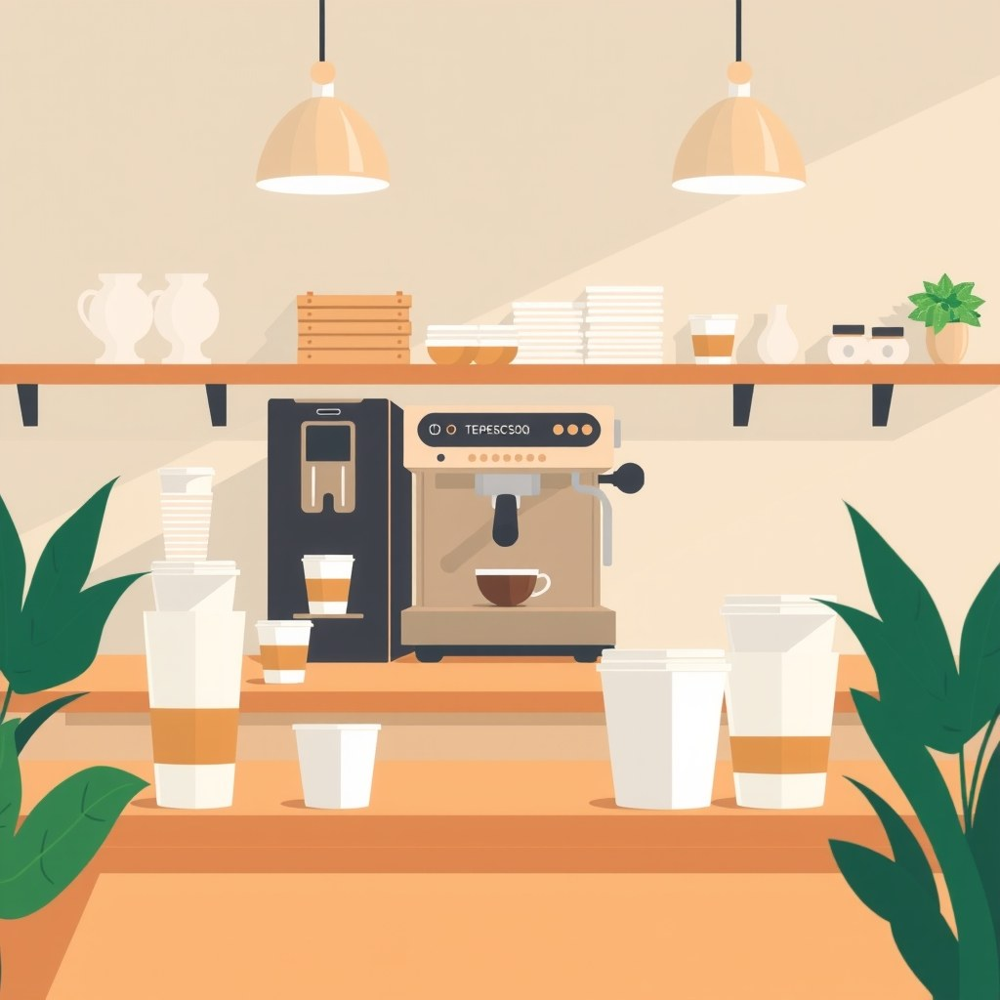

Apa Itu Sistem Nilai Bisnis dan Kenapa Produk Bagus Saja Tidak Cukup?

Sistem nilai bisnis adalah sebuah cetak biru terpadu tempat nilai diciptakan, disampaikan, dan ditukar dengan keuntungan secara berkelanjutan. Dalam dunia usaha, produk hanyalah satu elemen kecil dari keseluruhan mesin tersebut. Mengira bisnis akan otomatis sukses hanya karena produknya bagus sama seperti koki yang meracik masakan favoritnya di dapur tanpa pernah bertanya apakah tamu restoran sedang ingin makan masakan berkuah atau kering.
Banyak pemula jatuh ke dalam jebakan ego produk. Mereka menghabiskan 90 persen energi untuk menyempurnakan bentuk, rasa, atau fitur barang jualan, lalu menyisakan 10 persen sisanya untuk memikirkan cara pamasaran. Ketika toko dibuka dan tidak ada pembeli yang datang, mereka merasa bingung dan merasa pasar tidak menghargai kualitas. Padahal, calon pembeli bukan menolak produknya, melainkan memang tidak pernah mengetahui keberadaan produk tersebut atau merasa produk itu tidak menjawab masalah mendesak dalam hidup mereka.
Josh Kaufman dalam karyanya The Personal MBA: A World-Class Business Education in a Single Volume menjelaskan bahwa setiap bisnis yang hidup wajib memenuhi lima faktor universal: penciptaan nilai, permintaan pasar, transaksi penjualan, pengiriman nilai, dan keuntungan yang layak. Jika salah satu faktor ini hilang, usahamu akan berjalan pincang. Produk yang sangat baik sekalipun tidak akan menghasilkan penjualan jika tidak ada orang yang membutuhkan atau jika kamu tidak punya alur transaksi yang memudahkan pembeli.
Nilai sebuah bisnis tidak terletak pada seberapa keras usahamu membuatnya di balik layar, melainkan pada seberapa besar manfaat yang dirasakan oleh pembeli saat menggunakannya. Jika kamu menjual makanan nikmat tetapi lokasinya tersembunyi tanpa akses pemesanan online, nilai makanan itu terputus di tengah jalan karena tidak ada jalan bagi pembeli untuk menjangkaunya.
Kenapa Memahami Sistem Nilai Ini Sangat Penting buat Usahamu?
Ketika kamu memahami bisnis sebagai sebuah sistem, kamu tidak akan lagi menyalahkan hal-hal yang sifatnya kebetulan saat jualan sepi. Kamu jadi punya kacamata yang jernih untuk memeriksa titik mana yang sebenarnya tersumbat. Mengabaikan cara pandang sistemik ini biasanya membuat pemilik usaha terjebak dalam lingkaran tanpa akhir: ganti kemasan, ganti resep, atau terus menambah modal tanpa pernah menyelesaikan akar masalahnya.
Tanpa pemahaman sistemik, kamu akan mudah panik ketika omzet menurun. Reaksi refleks kebanyakan pemula saat jualan sepi adalah memberi diskon besar-besaran atau memotong harga jual. Padahal, jika masalah utamanya berada di saluran distribusi yang tidak terjangkau, menurunkan harga hanya akan menggerus margin keuntungan tanpa pernah menambah jumlah pembeli baru.
Alexander Osterwalder dan Yves Pigneur dalam buku Business Model Generation menegaskan pentingnya menggunakan model bisnis sebagai peta visual. Model bisnis ini membantu kita membongkar asumsi pribadi dan melihat bagaimana sembilan blok bangunan usaha bekerja saling terhubung. Jika kamu hanya sibuk menyempurnakan barang tanpa memikirkan siapa segmen pelangganmu dan bagaimana alur pendapatannya, usahamu akan kesulitan untuk bertahan secara finansial.
Melihat bisnis secara utuh juga membantumu menghemat modal dan waktu. Kamu tidak perlu terburu-buru menyewa ruko mahal atau membeli peralatan canggih sebelum memastikan ada kelompok pembeli nyata yang siap bertransaksi. Setiap rupiah modal yang kamu keluarkan dialokasikan dengan tujuan yang jelas untuk memperkuat mata rantai sistem nilai usahamu.
Untuk mempelajari lebih dalam tentang cara membaca kebutuhan pasar sebelum meluncurkan barang jualan, kamu bisa membaca artikel BiB mengenai cara membaca keinginan pasar sebelum jualan agar modal yang kamu keluarkan tidak terbuang sia-sia. Kamu juga bisa meninjau daftar lengkap bacaan bisnis di katalog artikel BiB untuk memperluas pemahaman operasional usahamu.
Cara Kerja Sistem Nilai Bisnis dalam 5 Langkah Praktis
Membangun sistem nilai bisnis bukanlah hal yang rumit jika kamu mengeksekusinya secara berurutan dan terstruktur. Berikut adalah lima langkah praktis untuk merangkai cetak biru usahamu dari awal:
Petakan Masalah Spesifik yang Diselesaikan Produk
Tuliskan dengan jelas manfaat produkmu bagi orang lain secara spesifik. Nilai bisnis bisa bersifat fungsional seperti menghemat waktu dan memangkas biaya, maupun bersifat emosional seperti memberikan rasa aman, kenyamanan, atau gengsi sosial. Pastikan kamu tahu persis masalah mana yang sedang kamu tuntaskan.
Kelompokkan Segmen Pembeli Secara Spesifik
Jangan menganggap semua orang adalah pembeli usahamu. Mengincar semua orang sama saja dengan tidak mengincar siapa pun. Tentukan kelompok pelanggan yang paling mengalami masalah tersebut, lengkap dengan kebiasaan harian mereka, lokasi berkumpul, serta daya beli nyata yang mereka miliki saat ini.
Rancang Saluran Pemasaran dan Transaksi
Tentukan bagaimana calon pembeli bisa mengetahui keberadaan usahamu dan seberapa mudah mereka melakukan pembayaran. Pangkas setiap hambatan yang membingungkan dalam proses pemesanan. Makin sedikit klik atau langkah yang dibutuhkan calon pembeli untuk bertransaksi, makin tinggi angka konversi penjualanmu.
Kelola Sistem Pengiriman Nilai ke Pelanggan
Pastikan pengalaman pembeli saat menerima barang sesuai atau bahkan melebihi janji yang kamu sampaikan dalam promosi. Pengiriman nilai mencakup kerapian kemasan, kecepatan pengiriman, hingga kemudahan layanan purna jual saat pelanggan menghadapi kendala pada barang yang dibeli.
Hitung Keuntungan Layak untuk Keberlanjutan
Hitung seluruh biaya operasional secara rinci, mulai dari bahan baku, biaya tenaga kerja, penyusutan alat, hingga anggaran promosi. Pastikan penetapan harga jual mencakup seluruh biaya tersebut dan memberikan margin keuntungan yang cukup agar usahamu dapat terus tumbuh dan berkembang.
Contoh Nyata: Kasus Warung Kopi Spesialis yang Sepi Pembeli

Sebagai gambaran nyata, mari kita bedah satu kasus simulasi usaha kedai kopi bernama Kopi Jiwa. Pemiliknya adalah seorang barista yang sangat memahami cita rasa kopi. Ia menginvestasikan mesin seduh buatan Italia seharga puluhan juta rupiah dan mengimpor biji kopi pilihan dari berbagai daerah. Namun, setelah tiga bulan berjalan, kedainya tetap sepi. Omzet harian bahkan tidak cukup untuk menutup biaya sewa tempat.
Pemilik merasa heran dan frustrasi karena menurut penilaian pribadinya, kualitas kopi buatannya jauh melampaui kedai-kedai lain di sekitar kawasan tersebut. Ia merasa pembeli lokal tidak mengerti standar kopi nikmat. Saat membedah usahanya menggunakan kacamata sistem nilai, baru terlihat jelas letak pemicu utamanya.
Kedai kopi tersebut berlokasi di area pemukiman padat yang dikelilingi oleh pekerja kantoran yang setiap pagi berpacu dengan waktu menuju stasiun. Pelanggan di kawasan itu tidak membutuhkan seduhan kopi artisan yang membutuhkan waktu tunggu 15 menit. Mereka membutuhkan asupan kafein yang praktis, cepat, berharga terjangkau, dan dapat dipesan dari HP saat mereka berjalan menuju tempat kerja.
| Elemen Sistem | Kondisi Awal (Sepi) | Sesudah Perbaikan Sistem |
|---|---|---|
| Proposisi Nilai | Kopi rasa rumit dan idealistis | Kopi praktis penambah energi pagi hari |
| Segmen Pelanggan | Semua pencinta kopi (terlalu luas) | Pekerja kantoran yang terburu-buru |
| Saluran Distribusi | Hanya layani beli langsung di tempat | Pemesanan awal via WhatsApp & ojek online |
| Hasil Finansial | Rugi operasional bulanan | Arus kas positif dan pembeli berulang |
Dengan memindahkan fokus dari idealisme pribadi menuju penyelesaian masalah pelanggan nyata, pemilik melakukan penyesuaian sistemik. Ia menyediakan paket kopi susu siap minum yang sudah dikemas rapi di lemari pendingin, muka kedai dilengkapi kaca layanan cepat, dan pesanan bisa masuk lewat aplikasi pesan singkat sebelum pembeli sampai di kedai. Hasilnya, arus kas usahanya membaik dalam waktu dua bulan karena pembeli mendapatkan nilai yang benar-benar mereka butuhkan.
Kesalahan Umum Pemilik Usaha Saat Menghadapi Jualan Sepi
Ketika jualan mulai sepi dan omzet merosot, ada empat kekeliruan fatal yang paling sering dilakukan oleh pemilik usaha kecil di lapangan:
- Terlalu Jatuh Cinta pada Produk Sendiri: Pemilik usaha menolak kenyataan bahwa barang jualannya kurang diminati. Mereka menyalahkan pembeli yang dianggap kurang teredukasi, alih-alih mengevaluasi apakah produk tersebut memang memberikan manfaat langsung yang dicari pasar.
- Menganggap Semua Orang Adalah Pasar: Tanpa penargetan yang spesifik, pesan pemasaran usahamu akan terasa tawar dan tidak menyentuh emosi kelompok pembeli mana pun. Akibatnya, anggaran iklan terbuang sia-sia untuk menjangkau orang yang tidak berniat membeli.
- Menurunkan Harga Secara Membuta (Perang Harga): Mengobral produk tanpa memperbaiki alur promosi dan distribusi hanya akan merusak citra barang dan menghancurkan margin bisnis. Ketika modal tergerus, kamu tidak lagi punya dana untuk memperbaiki operasional.
- Fokus pada Operasional Tanpa Memikirkan Arus Kas: Terlalu sibuk mempercantik dekorasi tempat atau merancang logo baru, tetapi mengabaikan kalkulasi biaya akuisisi pelanggan dan margin keuntungan bersih harian. Usaha akhirnya kehabisan uang tunai sebelum sempat berkembang.
Bagi kamu yang berencana menjual barang berbentuk informasi atau karya mandiri, panduan lengkap tentang cara validasi ide produk digital bisa membantumu menguji permintaan pasar secara nyata sebelum menginvestasikan banyak waktu dan biaya pembuatan.
Cara Mengecek Apakah Bisnismu Sudah Memiliki Sistem Nilai Utuh
Sebelum melanjutkan langkah operasional harian usahamu, coba duduk sejenak dan coba jelaskan ulang kondisi bisnis milikmu melalui tiga pertanyaan evaluasi mandiri ini tanpa menggunakan istilah teknis yang rumit:
- Uji Masalah Nyata: Jika barang jualanmu dihentikan besok pagi, masalah konkret apa yang akan membuat pelangganmu merasa kehilangan dan kesulitan dalam aktivitas harian mereka?
- Uji Pasar Spesifik: Siapa pembeli spesifik yang secara rutin membutuhkan usahamu, dan lewat saluran mana mereka bisa menemukan serta membeli barang jualanmu tanpa hambatan?
- Uji Keberlanjutan Finansial: Apakah seluruh biaya produksi, pengiriman, dan promosi sudah tertutup penuh oleh harga jual, sehingga bisnis menyisakan margin keuntungan yang cukup untuk bertahan dan tumbuh?
Jika kamu kesulitan menjawab salah satu dari tiga pertanyaan di atas, di situlah letak kebocoran sistem usahamu berada. Kamu tidak perlu panik atau merombak seluruh isi toko. Cukup perbaiki satu mata rantai yang paling lemah hingga alurnya kembali mengalir lancar.
Memperbaiki sistem nilai bisnis butuh waktu, ketelitian, dan keberanian untuk mengakui asumsi yang salah. Ini bukan jalan instan yang menghasilkan untung dalam semalam, melainkan fondasi nyata agar usahamu punya daya tahan jangka panjang dan tidak bergantung pada keberuntungan semata.
Polanya selalu sama: sistem yang teruji akan mengalahkan semangat emosional sesaat. Langkah pertama hari ini, ambil selembar kertas dan tuliskan satu masalah utama yang diselesaikan oleh produkmu bagi pelanggan, lalu periksa apakah alur penjualanmu sudah memudahkan mereka untuk melakukan transaksi.
Sumber
- The Personal MBA: A World-Class Business Education in a Single Volume — Josh Kaufman · 2010
- Business Model Generation: A Handbook for Visionaries, Game Changers, and Challengers — Alexander Osterwalder & Yves Pigneur · 2010